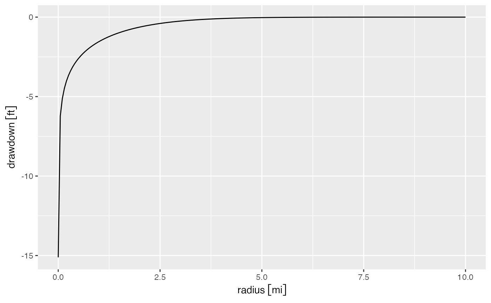

Glover-stream-depletion.RmdThis vignette illustrates key elements of the isw
package.
This idealized model assumes the wells are screened over the saturated thickness of the aquifer, the stream fully penetrates the aquifer, all flow is horizontal, and the transmissivity is uniform and insensitive to changes in water level.
Note that isw uses the units package to
keep track of dimensionality, therefore we can begin by loading both
packages. The set_units function can be used to specify
units objects.
Let’s first consider an aquifer with the following characteristics:
D): 100 ftK): 0.001 ft/secV): 0.2
D <- set_units(100, "ft")
K <- set_units(0.001, "ft/sec")
t <- set_units(5, "year")
V <- 0.2 # unitlessNow we estimate drawdown at multiple distances from a pumping well.
To do that, we use the function get_aquifer_drawdown_ratio.
This function gives the change in water level per unit pumping, assuming
homogeneous aquifer of infinite extent and no boundaries (i.e., no
streams). Let’s get this ratio a distances ranging from 1 ft to 10
miles, after 2 years of pumping.
r <- set_units(seq(1/5280, 10, length.out = 200), "mi")
t <- set_units(5, "year")
aquifer_drawdown_ratio <- get_aquifer_drawdown_ratio(r = r, K = K, D = D, V = V, t = t)For simplicity, let’s assume the well was pumping 1 cusec over those
two years. The change in water level is calculated as
aquifer_drawdown_ratio multiplied by the pumping rate.
pumping_rate <- set_units(1, "ft^3/sec")
aquifer_drawdown <- aquifer_drawdown_ratio * pumping_rateWe can then plot the drawdown as a function of pumping using
ggplot.
library(ggplot2)
drawdown_df <- data.frame(radius = r,
drawdown = aquifer_drawdown)
ggplot(drawdown_df, aes(radius, drawdown)) +
geom_line()
#> Warning: The `scale_name` argument of `continuous_scale()` is deprecated as of ggplot2
#> 3.5.0.
#> This warning is displayed once every 8 hours.
#> Call `lifecycle::last_lifecycle_warnings()` to see where this warning was
#> generated.
As a check, to give confidence in this calculation, we can calculate
the volume of water drained from the aquifer as drawdown times the
drainable porosity for circular bands around the well. For simplicity,
we use the dplyr package to calculate this value
library(dplyr)
dr <- r[2] - r[1]
drawdown_df <- drawdown_df %>%
mutate(d_area = dr * 2 * pi * r,
volumetric_drawdown = drawdown * d_area * V)In an aquifer with no recharge, the total volumetric drawdown should
be equal to the pumping rate over the time period, 1 cusec over five
years or 158 million ft3. The water drained from the aquifer
can be calculated using sum(volumetric_drawdown), which
gives a result of 0 million ft3.
The total radial flow towards the well can be calculated as \(q = 2 \pi r D K \frac{\partial h}{\partial r}\) (the typical negative sign in Darcy’s law is removed because we are calculating flow in the direction of negative r). We can run this calculation and plot flow towards the aquifer.
drawdown_df <- drawdown_df %>%
mutate(flow_towards_well = 2 * pi * r * D * K * (drawdown - lag(drawdown)) / dr)
ggplot(drawdown_df, aes(r, flow_towards_well)) + geom_line()
#> Warning: Removed 1 row containing missing values or values outside the scale range
#> (`geom_line()`).Note that closer to the pumping well this calculation suffers from
coarse discretization of the domain causing the flowrate to diverge from
1 ft3/s. You can verify this yourself by, for instance,
changing the radius to
r <- set_units(seq(1, 5, length.out = 200), "ft") and
re-running the calculations.